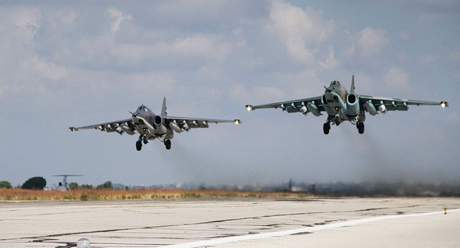

Le Conseil européen des Affaires étrangères (European Council on Foreign Relations) est un think-tank international qui se donne pour modèle les think-tank américains et ambitionne d’avoir le rôle qu’ils ont joués pour amener les Etats-Unis a abandonné leur politique isolationniste… L’un des membres fondateurs est le Français Jean-Marie Guéhenno1. Ce diplomate de carrière a joué un rôle important au sein de l’ONU puisqu’il a été pendant 8 ans le « Patron » du département du maintien de la paix de cette institution (le DPKO pour les connaisseurs).
L’un des derniers rapports de l’ECFR, qui se veut une analyse de la réforme militaire russe, conclut qu’elle avait été faussement interprétée, et son efficacité sous-estimée par les États-Unis et l'Europe…
Selon le magazine japonais « The Diplomat », qui se fait l’écho de l’ECFR, les analystes occidentaux exagèrent les difficultés auxquelles l'armée russe s'est confrontée durant la 3e phase de la reforme actuellement inachevée, celle du réarmement, pourtant ils ne sont pas intéressés au fond des réorganisations.
La réforme du système militaire russe se déroule en trois phases :
professionnalisation croissante avec une meilleure formation du personnel et une réduction du nombre d’appelés du contingent ;
amélioration de la capacité opérationnelle grâce à une rationalisation des structures de commandement et à des exercices militaires diversifiés allant de la basse à la haute intensité ;
réarmement et modernisation de l’armement.
Selon l’ECFR, les États-Unis et l'Europe ont porté une attention particulière à la troisième phase de ses réformes, encore inachevée, et ont fermé les yeux sur les progrès impressionnants atteints lors des premières étapes. (« Western analysts’ focus on the rearmament stage of the reforms, which has not yet been completed, has caused them to overlook the success of the other two stages. »). Ceux qui, comme moi, ont connu la Guerre Froide du côté « Bleu » ont reçu des séances d’information sur les « PAVA » (Forces du Pacte de Varsovie) dans lesquelles on nous expliquait les faiblesses structurelles de l’Armée Rouge par un déficit dans l’encadrement des petits échelons. Déficit dû à une quasi absence d’un corps de sous-officiers qui est, comme le dit l’adage, la « colonne vertébrale » de toute armée. Or la première phase a visé à renforcer l’encadrement par la création d’un corps de sous-officiers professionnels et un repyramidage afin d’avoir plus de cadres de contact (« professionally trained non-commissioned officers (NCO) were introduced. For the first time, the Russian army had a pyramid structure, with few decision-makers at the top and more officers servicing the troops. »). Cette phase a permis, également, la diminution du nombre d’appelés par une augmentation de soldats professionnels permettant, ainsi, d’utiliser du matériel plus évolué que le matériel rustique, qui prévalait, ainsi qu’une meilleure capacité de réaction. (« This allowed the troops to use more high-tech equipment (conscripts serve too short a period to be effectively trained on complex weapons systems) and increased the combat-readiness of elite forces (paratroopers, naval infantry, and special forces). »)
L’instruction de base, la formation ont été réformées en suivant les modèles suisse et autrichien pour que les cadres, à l’instar de leurs homologues occidentaux, soient capables d’évoluer, de commander et de s’adapter dans un milieu des plus complexes. (« The aim of Russian military planners was that the new generation of officers should be able to lead their troops in complex environments and quickly adapt to new situations by applying state of-the-art (Western) leadership techniques. ») Les habituer, en quelque sorte, à adopter l’Auftragtatik (le chef fixe l’objectif à atteindre à son subordonné qui est libre de choisir les moyens nécessaires) …
La deuxième phase a vu la Russie réorganiser entièrement la structure, de l’Armée Rouge, des Forces stratégiques à la création des nouvelles brigades de combat en passant par le soutien. L'objectif était d'améliorer la préparation, le déploiement, et la capacité de projection sur court préavis. En théorie, dans les 24 heures suivant l'alerte, toutes les unités aéroportées doivent être déployées et les brigades classiques prêtes au déploiement. Cet objectif n’est pas encore atteint mais est en passe de l’être…
Il faut conserver à l’esprit qu’avant les réformes, une division russe devait se préparer pendant un an avant d’être déployée en Tchétchénie… En effet, une division russe n’avait qu’un effectif correspondant à 43 % de son TEDG (Tableau des effectifs et des dotations Guerre) et devait attendre que la mobilisation soit décrétée pour terminer sa mise sur pied. Bien sûr le Grouppa sovietskikh voïsk v Germani (Groupement des forces armées soviétiques en Allemagne) était, lui, totalement en ordre de bataille. (Certains se souviendront peut-être de : « Face à nous, les éléments avancés de la 8e Armée blindée de la Garde… »)
Les résultats des réformes sont clairement visibles. Pendant la guerre Russo-Ukrainienne, l'armée russe a maintenue entre 40.000 et 150.000 hommes prêts au combat le long de la frontière russo-ukrainienne tout en menant des manœuvres, dans d'autres parties du pays, comprenant jusqu'à 80.000 soldats.
En outre, les troupes sont restés opérationnelles (« Combat Ready ») sur le terrain pendant des mois avant d’être relevée ce que l’on n’avait jamais vu, même pendant la deuxième guerre de Tchétchénie…
Avant les réformes, la capacité opérationnelle des unités diminuait immédiatement après le déploiement en raison d’une logistique inefficace ce qui, apparemment, n’est plus le cas…
La troisième phase, ralentie pour cause de crise économique, est celle qui retient les experts occidentaux. Certes, l’Europe dispose d’une armée, qualitativement, supérieure à celle des Russes mais ce terme de « qualitatif » ne concerne que trois pays (France, Royaume-Uni et Allemagne) d’autant plus qu’en matière de déploiement (constituer un corps de combat européen relève de la gageure), de capacité opérationnelle et de stock de munitions ne semblent pas à l’avantage des Européens. Toutefois, l’Affaire ukrainienne et maintenant la Syrie montre que la Russie a les capacités de frapper en peu de temps malgré un matériel moins performant que celui des Occidentaux.
Le rapport de l’ECFR reflète l'incompréhension des objectifs de la réforme. Elle ne prévoit pas une modernisation capitale des équipements militaires durant les premières étapes. Elle vise l'augmentation de l'efficacité du travail avec des équipements déjà existants, ce qui mène à l'augmentation de la productivité de toute la structure. De plus, selon le rapport, les analystes oublient l'approche russe unique consistant à marier parfaitement les méthodes conventionnelles et non conventionnelles pour mener une guerre…
A la lumière des opérations aériennes menées par l’armée russe en Syrie, la revue américaine « The National Interest » avait publié, en décembre 2015, un article dans lequel elle estime que la Russie a démontré les résultats de la professionnalisation de ses forces armées.
Selon l’auteur, « Les opérations ont permis à la Russie de réduire considérablement l'écart, tant technologique qu’en retour d’expérience, avec les forces armées occidentales. » (« All in all, the conflict is revealing that, at least in the short term, Russia is closing the gap in military technology and experience with the West. ») Les actions militaires russes en Syrie permettent aux pilotes d'acquérir une expérience inestimable, tout en permettant d’améliorer, in situ, la précision des bombes utilisées. («The conflict in Syria gives Russia leeway to test its precision munitions in real-world conditions… Its air force is gaining experience through conducting sorties»)
Le Commandement gagne, également, en expérience notamment dans l’utilisation d’armes guidées en coordination avec les troupes au sol (« Russia is now much more militarily savvy in its use of advanced missile and air systems, and is able to refine their use through foreign intervention.Coordination between these forces will likely improve, as Moscow used its previous military invasions to gain valuable lessons and will probably do the same now. »)
Le conflit en Syrie permet, donc, à l’armée russe de rôder ses nouvelles structures, d’améliorer son armement, de gagner de l’expérience dans la conduite d’opérations sur un théâtre outremer… Le tout avec cynisme si l’on songe que des dégâts collatéraux sur ce théâtre ont beaucoup moins d’échos que des dégâts collatéraux en Ukraine tout en permettant au Président russe de faire une démonstration de puissance. Démonstration qui ne doit pas nous faire jouer Able Archer à l’envers… En 1983, cet exercice militaire de l'OTAN avait failli conduire à une guerre nucléaire tant le réalisme du scénario, incluant des frappes nucléaires avait semé la panique chez les Soviétiques si on en croit un rapport américain qui a été rendu public il y a quelques semaines…
P.T.-H.
1né le 30 octobre 1949, est un diplomate français, spécialiste des questions de défense et desrelations internationales. Il fut Secrétaire général adjoint au Département des opérations de maintien de la paix de l'Organisation des Nations unies, jusqu'en juillet 2008, après avoir annoncé le 5 mars 2008 qu'il ne renouvellerait pas son mandat. Il a été remplacé à ce poste par Alain Le Roy. Le 22 mars 2012 il est nommé assistant auprès de Kofi Annan pour sa mission en Syrie. Il est le Président-Directeur Général de l'International Crisis Group depuis 2014.